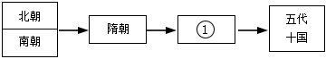
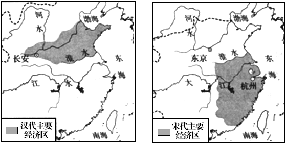
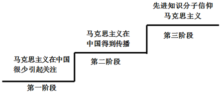
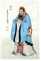
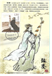
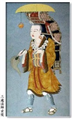
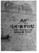
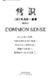
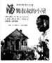
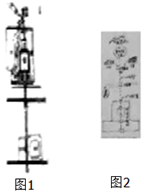

2018年北京市中考历史试题 原卷解析
2018年北京市中考历史试卷
参考答案与试题解析
一、选择题题，每小题3分，其45分．在每小列出的四个选项中，选出最符合题目要求的一项．
1．（3分）考古工作者制作完成“北京人头部复原像”（见图）的主要依据（ ）

A．周口店的自然环境B．遗址中的打制石器
C．北京人头盖骨化石D．北京人生活想象图
【分析】本题以“北京人头部复原像”为切入点，考查的是北京人的相关知识点。
【解答】图片是远古北京人的头像。依据“北京人头部复原像”，据此像能得到的结论是北京人头部仍保留着不少原始特征。北京人生活在距今约七十万年至二十万年的北京西南周口店的山洞里，北京人还保留了猿的某些特征，使用打制的石器，过群居生活，共同劳动（采集、狩猎）共同分享劳动成果。根据北京人的化石可以复原北京人头像，即根据考古挖掘来进行历史研究。
故选：C。
【点评】本题考查学生对历史史实的准确识记和理解能力。注意掌握北京人的有关内容。
2．（3分）它上承原始刻绘符号，后启青铜铭文，现代汉字由它演变而来。材料中的“它”是（ ）
A．甲骨文B．金文C．小篆D．隶书
【分析】本题以它上承原始刻绘符号，后启青铜铭文，现代汉字由它演变而来为切入点，考查甲骨文的相关知识。
【解答】本题考查中国古代的文字。根据所学，文字的发展历程为甲骨文、金文（铭文）、小篆、隶书、楷行草书。题干中上承原始的刻绘符号，下启铭文，可知应该为甲文，甲骨文已经具备了汉字的基本结构，是汉字形成和发展的重要阶段。
故选：A。
【点评】注意识记中国古代文字演变的相关知识。
3．（3分）周灭商以后，封黄帝后代于蓟，蓟城在今西城区广安门一带：封周王室贵族于燕，燕都在今房山区琉璃河镇。材料反映的政治制度是（ ）
A．禅让制B．分封制C．郡县制D．行省制
【分析】本题考查西周的政治制度。主要考查分封制。
【解答】材料提到的时间为西周建立之后，内容为分封先代帝王之后和同姓贵族，所以为分封制。为了巩固奴隶主政权，西周建立后，把土地和人民分封给王族、功臣和先代的贵族，让他们到各地去做诸侯，建立诸侯国；被封诸侯要服从国王的命令，要向周王贡献财物，不是诸侯要按田亩数向国王纳贡。
故选：B。
【点评】本题主要考查学生对西周的政治制度﹣﹣分封制的掌握。应理解西周的分封制。
4．（3分）对如图示意图解读正确的是（ ）

A．春秋时期的诸侯争霸B．战国时期的百家争鸣
C．秦朝建立后巩固统一D．汉武帝加强中央集权
【分析】本题结合秦朝统一货币和文字的图考查秦朝巩固统一的知识，考查归纳概括能力。
【解答】根据示意图可知，为统一文字、货币的内容。根据所学，秦朝建立后，秦始皇为加强统治，统一了文字、货币、度量衡。统一后的文字为小篆，货币为圆形方孔钱。
故选：C。
【点评】本题旨在结合秦朝统一货币和文字的图考查学生对秦朝巩固统一的知识归纳概括能力。学生需培养识图概括能力。
5．（3分）如图所示，地图反映的历史事件的影响是（ ）

A．为曹操统一北方奠定基础
B．为三国鼎立形成奠定基础
C．三国鼎立的局面正式形成
D．最终结束三国鼎立的局面
【分析】本题以赤壁之战形势图为切入点，考查赤壁之战。
【解答】根据图片“赤壁，孙权、刘备军，曹操军”可知图片为赤壁之战形势图，赤壁之战奠定了三国鼎立的基础。A项为曹操统一北方奠定基础的是官渡之战：C项222年孙权称王，三国鼎立局面正式形成：D项结束三国鼎立局面的是西晋建立后统一全国。
故选：B。
【点评】本题以赤壁之战为背景，考查学生识图和识记历史知识能力。
6．（3分）与如图示意图中①相关的史实是（ ）

A．北魏改革，民族交融B．定都建康，开发江南
C．开凿运河，创立科举D．贞观之治，开元盛世
【分析】本题考查了唐朝的盛世局面，注意全面分析题干给出的王朝更迭示意图。
【解答】隋朝后面的朝代是唐朝，选项中A为北魏孝文帝改革，B为东晋时期的历史史实，C为隋朝的历史史实，正确答案为D项。贞观之治是唐太宗时期的治世局面，开元盛世为唐玄宗时期出现的盛世局面。
故选：D。
【点评】本题主要考查学生对历史知识的灵活运用能力，需要灵活运用王朝更迭与唐朝出现的盛世局面。
7．（3分）对以下大事年表解读正确的是（ ）
960年 | 1005年 | 1038年 | 1044年 | 1125年 | 1127年 | 1140年 | 1141年 |
北宋建立 | 宋辽订立澶渊之盟 | 西夏建立 | 宋夏达成和议 | 金灭辽 | 金灭北宋 | 南宋取得郾城大捷 | 南宋与金签订和约 |
A．各民族政权始终处于战争状态
B．北宋政权存在不超过一百年
C．辽与南宋维持相对和平的局面
D．各民族政权并立与力量消长
【分析】本题以大事年表为背景，考查辽、宋、夏、宋的和战。
【解答】通过表格可以看出：各政权之间既有战争又有和平，各个政权也出现了不同的变化。分析选项，A项始终处于战争状态与材料不符：B项北宋960年建立，1127年灭亡，实际超过了100年：C项南宋建立的时候，辽政权已经被金所灭。D解读正确。
故选：D。
【点评】本题以辽、宋、夏、宋的和战为背景，考查学生运用所学解决问题能力。
8．（3分）如图两幅示意图反映的变化是（ ）

A．商品经济发展B．耕地面积增加
C．海外贸易兴起D．经济重心南移
【分析】本题以两幅示意图为切入点，考查的是我国古代经济重心南移的相关知识点。
【解答】本题两幅图分别为汉代主要经济区和宋代主要经济区分布图。同学们通过分析两幅图可以明显的看出汉代主要经济区位于黄河中下游地区，宋代主要经济区主要位于长江下游流域，明显是经济重心南移的结果。
故选：D。
【点评】本题考查学生对历史史实的准确识记和理解能力。注意掌握我国古代经济重心南移的有关内容。
9．（3分）清朝修建永安寺（位于今北海公园白塔旁），寺内供奉达赖和班禅的塑像，这有利于加强中央政府与某疆地区的联系。这一地区是（ ）
A．西藏B．台湾C．新疆D．东北
【分析】本题主要考查清朝时期对西藏的管辖。清朝初期，顺治帝隆重接见前来朝贺的西藏佛教首领达赖五世，并赐予“达赖喇嘛”的封号。后来，康熙帝又赐予另一位西藏佛教首领“班禅额尔德尼”的封号。1727年，清朝开始设置驻藏大臣。明确规定驻藏大臣代表中央政府与达赖，班禅共同管理西藏事务。
【解答】材料中的关键词“达赖、班禅”可以知道是清代加强对西藏地区的管辖。顺治皇帝册封五世达赖为“达赖喇嘛”，康熙皇帝册封五世班禅为“班禅额尔德尼”，雍正皇帝时期设置了驻藏大臣，加强了对西藏地区的统治。
故选：A。
【点评】本题主要考查学生对历史史实的准确识记和理解能力。理解并识记清朝时期多民族国家的巩固的相关史实。
10．（3分）戚继光抗倭和郑成功收复台湾的共同之处是（ ）
A．加强了明朝的对外交往B．打破了清朝的闭关锁国
C．抗击了西方列强的侵略D．维护了祖国的海疆安全
【分析】本题主要考查戚继光抗倭和郑成功收复台湾的共同之处的相关史实。戚继光肃清了东南沿海的倭寇，郑成功收复台湾赶走荷兰殖民者，都属于维护祖国海疆安全的内容。
【解答】戚继光和郑成功都是民族英雄，所以共同点为抵抗侵略，维护祖国安全。A项应该为郑和，B项为清代，戚继光是明代，且没有体现打破闭关锁国。C项倭寇为来自日本的海盗，不属于西方的列强。D项戚继光肃清了东南沿海的倭寇，郑成功收复台湾赶走荷兰殖民者，都属于维护祖国海疆安全的内容。
故选：D。
【点评】本题主要考查学生综合运用所学知识解决问题的能力。理解并识记戚继光抗倭和郑成功收复台湾的相关史实。
11．（3分）某校学生开展中国古代文明系列明信片设计活动，如图明信片设计稿的主题是（ ）
A．科学技术发达B．医学领先世界
C．手工技艺精湛D．绘画成就卓越
【分析】本题以某校学生开展中国古代文明系列明信片设计活动为切入点，考查中国古代科学技术。
【解答】明信片上的人物蔡伦（改进造纸术）、张仲景（“医圣，代表作为《伤寒杂病论》）、华佗（主要贡献为麻沸散和五禽戏）、祖冲之（将圆周率精确到小数点后面的第七位数字），都体现了中国古代科学技术的发达。
故选：A。
【点评】本题以中国古代科学技术为背景，考查学生运用所学解决问题能力。
12．（3分）如图示意图从某个角度反映了中国近代民族危机的不断加深，其中①应为（ ）
A．俄国割占外兴安岭以南、黑龙江以北
B．允许日本在通商口岸投资开设工厂
C．割辽东半岛、台湾、澎湖列岛给日本
D．允许列强驻守北京到山海关铁路沿线要地
【分析】本题以历史年代尺为切入点，考查《马关条约》的相关知识。
【解答】由前三个示例可知此题考查角度为近代不平等条约中我国被迫割让的领土。根据时间轴所示，结合所学，我们可得知1895年所对应的应为《马关条约》，符合题意要求的只有C选项。A项为英国第二次鸦片战争中俄国趁火打劫，割占我国东北地区，时间不符：B项为《马关条约》内容，但不符合割占领土的主题；D项为1901年《辛丑条约》内容。
故选：C。
【点评】注意对图片的解读，识记《马关条约》的主要内容及影响。
13．（3分）社会变化反映在人们生活的各个方面，以下是上海白渡桥平均每天通行情况表（单位：次）。材料反映出（ ）
时间 | 人力车 | 马车 | 轿子 | 自行车 | 汽车 | 有轨电车 |
1889年 | 544 | 9 | 11 | 0 | 0 | 0 |
1926年 | 14600 | 0 | 0 | 3459 | 3936 | 922 |
A．等级观念的消失B．娱乐方式的多样化
C．民族工业的发展D．交通工具的近代化
【分析】本题考查了近代社会生活变化。近代以来，随着西方的坚船利炮的到来，外来事物从四面八方滚滚而来，古老的中国发生着艰难的改变。
【解答】材料反映出的是通行情况，根据表格信息可知，自行、汽车，有轨电车等近代变通工具从无到有，开始占据重要地位：而传统出行方式如马车、轿子则数量大减。材料反映出交通工具的近代化。
故选：D。
【点评】本题属于材料型选择题，主要考查学生的阅读分析能力，解答此类必须认真阅读材料，结合所学知识提炼材料中的重要信息和观点。
14．（3分）某校排练了一部历史剧，其中一句台词是：请“民主”和“科学”两位先生来救治中国政治上、道德上、思想上的一切黑暗。据此判断在这部历史剧中表现了（ ）
A．太平天国运动B．辛亥革命
C．新文化运动D．北伐战争
【分析】本题主要考查新文化运动的相关史实。新文化运动是我国历史上一次空前的思想大解放运动。
【解答】1915年，陈独秀、李大钊、胡适、鲁迅等高举“民主”与“科学”两面大旗，以《新青年》为主要阵地，掀起了空前的思想大解放运动﹣﹣新文化运动，新文化运动是我国历史上一次空前的思想大解放运动。它启发着人们追求民主和科学，探索救国救民的真理，为马克思主义在中国的传播创造了条件。但它有对东西方文化绝对否定绝对肯定的偏向。民主与科学是新文化运动中高举的两面大旗。据关键词“民主”、“科学”两位先生可知，答案为C选项，其它选项均未直接涉及。
故选：C。
【点评】本题主要考查学生的识记能力以及分析问题的能力。理解并识记新文化运动的相关史实。
15．（3分）如图反映了红军长征中的一个重大历史事件。《长征组歌》中描述这个历史事件的歌词是（ ）

A．遵义会议放光辉，全党全军齐欢庆
B．昼夜兼程二百四，猛打穷追夺泸定
C．雪山低头迎远客，草毯泥毡扎营盘
D．陕甘军民传喜讯，征师胜利到吴起
【分析】本题以《长征组歌》为切入点，考查的是红军长征的相关知识点。
【解答】考察红长征的过程。从下图可以看到红车战士们正匍匐在铁索中前行，身下是湍急的河流。结合所学，可联想至。红军长征中的“飞夺泸定桥”，与此相关的近选项只有B“猛打穷追夺泸定”符合，故答案为B选项。
故选：B。
【点评】本题考查学生对历史史实的准确识记和理解能力。注意掌握红军长征的有关内容。
16．（3分）中国共产党是抗日战争的中流砥柱以下史实能证明这一结论的有（ ）
①九一八事变后，中国共产党领导东北抗战
②促成国共两党再度合作，团结抗战
③建立敌后抗日根据地，开展游击战争
④中国与反法西斯国家结盟，共同作战
A．①②③B．①②④C．①③④D．②③④
【分析】本题以中国共产党是抗日战争的中流砥柱为切入点，考查中国共产党在抗日战争中的作用及贡献。
【解答】本题考查中国共产党在抗日战争中的作用及贡献。①明显合理：②反映的是中国共产党促成西安事变的和平解决，为全民族的抗战定基础，符合题意：③国共第二次合作后共产党领导的红军改变为八路军和新四军，开始敌后抗战，给了日军以沉重打击，符合题意：④反映的是中国抗日战争与世界反法西斯战争的联系，不直接涉及中国共产党的中流砥柱作用，与题意无关。
故选：A。
【点评】注意识记抗日战争的主要战役及抗战胜利的意义。
17．（3分）人民解放军经历142天的连续作战，从277万人增加到358万人：国民党军队从365万人下降到204万人，主力基本被消灭。取得以上战果的是（ ）
A．转战陕北B．挺进大别山C．三大战役D．渡江战役
【分析】本题以人民解放军经历142天的连续作战，从277万人增加到358万人：玉民党军从365万人下降到204万人，主力基本被消灭为依托，考查解放战争的知识点。注意掌握相关基础知识。
【解答】题干中信息“解放军”、“142天”以及国共两党军队的数量对比发生的明显变化可知，取得以上战果的是应为三大战役。从1948年9月到1949年1月，人民解放军先后进行了与国民党军队主力决战的辽沈、淮海和平津三大战役。三大战役中，人民解放军共歼灭和改编国民党军队一百五十多万人，国民党军队的主力基本上被消灭，共产党军队超过国民党，而对应的国民党军队数量锐减，C符合题意。
故选：C。
【点评】本题考查学生识记和分析历史知识的能力，识记与灵活掌握解放战争的重大事件以及意义。
18．（3分）如图反映了我国公有制、私有制经济成分比重的变化。导致这一变化的是（ ）
公有制经济和私有经济在国民经济中的比重

A．进行土地改革
B．实行三大改造
C．开展人民公社化运动
D．推行家庭联产承包责任制
【分析】本题以图片信息为依托，考查三大改造的知识点。注意掌握相关基础知识。
【解答】从两个图例以及题干可知，题目反映的是在国民经济成分中，公有制经济占比大大超过了私有制经济。结合所学，三大改造的完成使得我国进入了社会主义初级阶段，完成了生产料私有制向社会主义公有制的转变，我国社会主义的基本制度建立。A选项土地改革，改变的是土地制度而非社会性质；C选项人民公社化运动，没有改变公有制的现状，时间也不符合：D选项家庭联产承包责任制，农民获得的是土地的使用权而非所有权。同时根据图示时间，符合要求的只有B选项。
故选：B。
【点评】本题主要考查学生运用所学知识解决问题的能力。识记与灵活掌握三大改造的内容、形式以及意义。
19．（3分）如图是党中央、国务院中央军委颁发的功勋奖章，获得这枚奖章的是（ ）

A．邓稼先B．王进喜C．焦裕禄D．袁隆平
【分析】本题考查邓稼先。探索建设社会主义时期涌现出的模范人物主要有“两弹元勋”邓稼先；“铁人”王进喜；“党的好干部”焦裕禄等，他们身上都具有艰苦创业和全心全意为人民服务的精神。
【解答】图示为两弹一星勋奖章，所给四个选项中获得此奖章的只有邓稼先。王进喜是石油工人，被誉为“铁人”；焦裕禄曾任河南兰考县委书记，被誉为“党的好干部”；袁隆平的贡献是培育了杂交水稻，被誉为“杂交水稻”之父。
故选：A。
【点评】需要准确识记模范人物邓稼先的事迹。
20．（3分）下列史实反映的共同主题是（ ）
（1）1992年11月，大陆海协会和台湾海基会达成体现一个中国原则的“九二共识”
（2）1997年7月1日，中国对香港恢复行使主权
（3）1999年12月20日，中国对澳门恢复行使主权
A．祖国统一B．外交成就C．军队建设D．民族团结
【分析】本题主要考查祖国统一大业的相关史实。十一届三中全会后，改革开放带来综合国力的提高。邓小平从维护祖国和中华民族的根本利益出发，提出“一国两制”的创造性构想。这是完成祖国统一大业的基本方针。
【解答】从材料中可知涉及到的事件有三个，分别是海峡两岸达成的“九二共识”、香港回归、澳门回归，都是关于我国在统一历程中的重大事件，因此反映的共同主题应为祖国统一，其他各项均未涉及。选项A符合题意。
故选：A。
【点评】本题主要考查学生对历史史实的准确识记和理解能力。理解并识记祖国统一大业的相关史实。
21．（3分）如图所示，漫画反映出古代雅典（ ）

A．通过扩张成为地中海霸主
B．重视教育并鼓励学术研究
C．所有居民都有参政的权利
D．公民大会是最高权力机构
【分析】本题考查古代雅典的民主政治。
【解答】从图中人物对话中的信息可知，强调的是雅典的民主和公民大会的重要性；A选项描述的是古罗马；B选项从图片中无法得出；C选项中“所有居民”表述错误，符合题意的为D选项。
故选：D。
【点评】本题旨在结合图画考查学生对雅典民主政治的掌握。需熟悉雅典民主政治的内容。
22．（3分）12世纪初，伦敦市民每年向王室缴纳300镑税金，以此获得国王对市民自选市长和市政官的许可。材料反映出中世纪欧洲（ ）
A．封君封臣制度逐步形成
B．国家税收主要来源于城市
C．城市获得了部分自治权
D．市民以暴力方式反抗贵族
【分析】本题考查了西欧城市的重新兴起。10世纪西欧开始出现作为手工业和商业的中心的城市。
【解答】12世纪初，伦敦市民每年向王室缴纳300镑税金，以此获得国王对市民自选市长和市政官的许可。材料反映出中世纪欧洲城市获得了部分自治权。随着商品经济的发展，封建主日益贪婪，对城市市民加紧剥削。十一二世纪，法国一些城市的市民展开了与封建主的斗争，有的城市用金钱赎买、有的通过武力赢得自治权。琅城市民争取自治的斗争是一个典型的例子。
故选：C。
【点评】本题属于材料型选择题，主要考查学生的阅读分析能力，解答此类必须认真阅读材料，结合所学知识提炼材料中的重要信息和观点。
23．（3分）1493年，一封发自西班牙的信件中说：“有个叫克里斯托弗・哥伦布的人，航行到了地球另一端，直抵印度附近地区一一至少他这么认为。”信中的“地球另一端”实际是（ ）
A．美洲B．大洋洲C．亚洲D．非洲
【分析】本题以1493年，一封发自西班牙的信件为依托，考查新航路开辟的知识点。注意掌握相关基础知识。
【解答】材料中的“1493”“哥伦布”是解题的关键信息。1492年，哥伦布受西班牙王室的资助，到达今天美洲的古巴、海地等地。但哥伦布始终相信自己到的地方是亚洲的印度。因而信中的“地球另一端”实际是美洲。
故选：A。
【点评】本题考查学生识记和分析历史知识的能力，识记与灵活掌握新航路开辟的原因、经过、结果和历史影响。
24．（3分）《拿破仑法典》反映了保护私有财产，废除法律面前的阶级差异等原则。这说明拿破仑（ ）
A．领导法国人民推翻封建王朝
B．维护法国大革命成果
C．给欧洲各国带来了民族压迫
D．在法国实行专制统治
【分析】本题主要考查《拿破仑法典》的相关史实。《拿破仑法典》把资产阶级革命用法律形式固定下来，它是一部典型的资产阶级法典。
【解答】《拿破仑法典》把资产阶级革命用法律形式固定下来，它是一部典型的资产阶级法典。《拿破仑法典》反映了保护私有财产，废除法律面前的阶级差异等原则，打击了欧洲封建势力，推动了欧洲资本主义的发展，维护法国大革命成果，成为近代欧洲各国资产阶级法典的范本。选项B符合题意。
故选：B。
【点评】本题主要考查解读题干信息和对历史史实的分析和准确识记能力。理解并识记《拿破仑法典》的相关史实。
25．（3分）一位历史学家说：“推翻德川幕府的人一旦掌政权，他们认为驱逐西方的唯一方法就是学习西方的技术和管理秘诀……为了保卫国家，他们显然要认真地改造国家。”材料中“改造国家”的事件是（ ）
A．大化改新B．彼得一世改革
C．明治维新D．俄国农奴制改革
【分析】本题考查了日本明治维新。日本强大起来以后，很快走上了对外侵略扩张的军国主义道路。
【解答】一位历史学家说：“推翻德川幕府的人一旦掌政权，他们认为驱逐西方的唯一方法就是学习西方的技术和管理秘诀……为了保卫国家，他们显然要认真地改造国家。”材料中“改造国家”的事件是明治维新。1868年明治政府实行了一系列资产阶级性质的改革，主要内容有：政治方面，“废藩置县”，加强中央集权；经济方面，允许土地买卖，引进西方技术，鼓励发展近代工业；社会生活方面，提倡文明开化，即向欧美学习，努力发展教育。明治维新使日本从一个闭关锁国的封建国家，逐步转变为资本主义国家，摆脱了沦为半殖民地国家的命运，是日本历史的重大转折点。但日本强大起来以后，很快走上了对外侵略扩张的军国主义道路。
故选：C。
【点评】本题考查学生对历史知识的灵活运用能力，需要灵活运用日本明治维新的内容、影响。
26．（3分）2018年9月，图中的纪念碑将在伦敦落成，以纪念十几万中国劳工，他们在100年前支援协约国取得了一场战争的胜利。这场战争是（ ）

A．英国内战B．拉丁美洲独立战
C．印度民族大起义D．第一次世界大战
【分析】本题以2018年9月，图中的纪念碑将在伦敦落成，以纪念十几万中国劳工，他们在100年前支援协约国取得了一场战争的胜利为切入点，考查第一次世界大战的相关知识。
【解答】从2018年算起，往前推100年，就是1918年。再由材料“伦敦”“中国劳工”“协约国”可知这场战争是“第一次世界大战”。
故选：D。
【点评】注意对材料信息的提取，识记第一次世界大战的相关知识。
27．（3分）1933年美国政府颁布法规，规定工人的工作时数为每周35小时，最低工资为每小时0.4美元。与这一法规相关的是（ ）
A．战时共产主义政策B．罗斯福新政
C．马歇尔计划D．杜鲁门主义
【分析】本题以1933年美国政府颁布法规，规定工人的工作时数为每周35小时，最低工资为每小时0.4美元。与这一法规相关的是为依托，考查第二次世界大战的知识点。注意掌握相关基础知识。
【解答】1933年，罗斯福就任美国总统，开始实行新政，通过加强国家对经济的干预和指导，以消除经济危机。由材料中的“1933年”“美国政府”“工人“”等信息，可以得出为罗斯福新政。
故选：B。
【点评】本题主要考查学生的识记能力以及分析问题的能力。识记与灵活掌握罗斯福新政的背景、中心措施、特点以及影响和启示。
28．（3分）如图示意图呈现了第二次世界大战的主要进程，①处应是（ ）

A．莫斯科保卫战B．斯大林格勒战役
C．诺曼底登陆D．德国无条件投降
【分析】本题考查第二次世界大战，知道斯大林格勒战役是第二次世界大战的重要转折点。
【解答】1942年7月至1943年2月，苏军在斯大林格勒与德军展开了激烈的争夺，最终苏军取得胜利。斯大林格勒战役成为第二次世界大战的重要转折点。对应示意图，第二次世界大战的主要进程①应为斯大林格勒战役。
故选：B。
【点评】本题主要考查学生的识记能力以及分析问题的能力。识记与灵活掌握第二次世界大战重大事件以及影响。
29．（3分）某历史公众号准备推送一期专题亚非拉国家民族独立和振兴。下列各项可以放进专题资源包的是（ ）
①论文：《民族认同与德国的重新统一》
②图片：《纳米比亚独立》
③地图：《巴拿马收回运河主权的斗争》
④视频：《苏联的改革》
A．①③B．③④C．②③D．②④
【分析】本题考查了亚非拉国家民族独立和振兴，注意题目强调的地区范围。
【解答】“德国的重新统一”和“苏联的改革”都发生在欧洲，不属于亚非拉国家，据此可排除ABD三个选项。“纳米比亚独立”“巴拿马收回运河主权的斗争”均为亚非拉国家独立和振兴的重大事件。
故选：C。
【点评】本题主要考查学生对历史知识的灵活运用能力，需要灵活运用相关国家所处的大洲。
30．（3分）习近平主席在2018年上合青岛会上说：“各国只有加强团结协作，深化和平合作、平等相待、开放包容、共赢共享的伙伴关系，才能实现持久稳定和发展。”以下史实中能印证这一观点的是（ ）
①萨拉热窝事件
②北约、华约对峙
③欧盟的建立和发展
④中国加入世界贸易组织
A．①②B．③④C．①③D．②④
【分析】本题考查了各国加强团结协作的事件，可用排除法解答。
【解答】由材料可知，习近平主席讲话的重要关键词是“团结协作”“稳定和发展”“萨拉热窝事件”是一战的导火线，“北约、华约对峙”是军事集团对峙，威胁世界和平与安全，不符合习主库讲话的主旨，排除ACD三个选项。
故选：B。
【点评】组合选择题一般排除一个错误内容即可获取正确答案，部分题目需要经过两次排除，但有一小部分题目所有内容都正确。
二、解答题（共4小题，满分45分）
31．（12分）马克思主义是随着实践的发展而发展的科学。
材料一：《宣言》称，“到目前为止的一切社会的历史都是阶级斗争的历史”，资本主义制度的灭亡和无产阶级的胜利是同样不可避免的。马克思和恩格斯相信，未来社会中，资产阶级生产资料私有制和剥削制度将被消灭，因此不再有阶级。未来社会必将创造出高于资本主义社会的生产力。由于马克思、恩格斯以建立一个实现人的自由而全面发展的理想社会为目标，所以他们的思想为人们所向往、所追求。
﹣﹣摘自刘玉安等《西方政治思想通史》
（1）材料一中的《宣言》是指哪部著作？依据材料一，说出马克思和恩格斯想的未来理想社会的特点。
材料二：俄国革命前，马克思主义在中国很少引起关注。列宁在俄国夺取政权后，李大钊开始在中国传播马克思主义。虽然李大钊接受了俄国革命的主张，陈独秀也注视着俄革命的局势，但他们还不是严格意义上的马克思主义者。1919年的反帝运动期间，李大钊、陈独秀的思想有了重大发展，他们都坚定地站到了马克思列宁主义阵营，并且还有一群学生追随他们。
﹣﹣摘编自史华慈《中国的共产主义与毛泽东的崛起》
（2）如图是依据材料二绘制的马克思主义在中国传播过程示意图。依材料二，说出促成以下各阶段转变的重大历史事件的名称。

材料三：中国共产党的建立大事年表（部分）
①1920年，《新青年》成为上海共产党组织的机关刊物。
②1920年，北京的共产党早期组织“共产党小组”在1北京大学正式成立。
③1921年，北京共产党小组的邓中夏等人在长辛店给工人开办劳动补习学校。
④1921年，中共“一大”召开，确定党的纲领是“以无产阶级革命军队推翻资产阶级”“采用无产阶级专政，以达到阶级斗争的目的一一消灭阶级。
（3）请用材料三中的史实证明下列观点。（填写序号即可）
中国的马克思主义思想运动一开始就重视工人教育： ③ 。
中国共产党提出用革命手段实现奋斗目标： ④ 。
材料四
| 革命道路 | 建设道路 |
马克思主义理论 | 武装斗争夺取政权 | 发展生产力，实现共产主义 |
苏俄 | 国情：城市工人阶级力量强大 道路：在中心城市发动武装起义进而夺取全国胜利，建立第一个社会主义国家，这被视为社会主义革命的经典道路 | 领导人：列宁 政策：① 新经济政策 内容：用粮食税代替余粮收集制；允许多种经济并存，发展商品经济 |
中国 | 国情：农民占人口绝大多数；在农村敌人统治力量薄弱 道路：中国共产党建立井冈山革命根据地，走以农村包围城市、最后夺取全国政权的道路 | 领导人：② 邓小平 道路：改革开放 内容：城市进行国有企业改革；建立经济特区 |
（4）依据材料四，说出苏俄和中国革命道路的共同点。将表格中①②补充完整。
材料五：社会主义核心价值观的核心价值原则来源于马克思主义价值理论：社会主义核心价值观的思想方法来源于马克思主义的方法论。中华优秀传统文化、革命文化和社会主义先进文化展现了中华优秀文化的内涵。中华优秀传统文化滋养社会主义核心价值观：革命文化熔铸社会主义核心价值观社会主义先进文化涵育社会主义核心价值观。
﹣﹣摘编自方晓春《社会主义核心价值观与马克思主义价值理论的逻辑关系》等
（5）依据材料五，说明社会主义核心价值观与马克思主义理论、中华优秀文化的关系。
【分析】本题以马克思主义是随着实践的发展而发展的科学为切入点，以五则材料为依托，综合考查国际共运史的重大事件，题目设计既注重基础性，又注重概括性和开放性，对学生答题能力要求较高。
【解答】（1）据材料“《宣言》称‘到目前为止的一切社会的历史都是阶级斗争的历史’资本主义制度的灭亡和无产阶级的胜利是同样不可避免的。马克思和恩格斯相信，未来社会中，资产阶级生产资料私有制和剥削制度将被消灭，因此不再有阶级。未来社会必将创造出高于资本主义社会的生产力。由于马克思、恩格斯以建立一个实现人的自由而全面发展的理想社会为目标，所以他们的思想为人们所向往、所追求”并结合所学知识可知，《宣言》指的是《共产党宣言》。据材料并结合所学知识，紧扣设问中“未来理想社会”这一关键词，马克思和恩格斯想的未来理想社会的特点是未来社会中，资产阶级生产资料私有制和剥削制度将被消灭，因此不再有阶级。未来社会必将创造出高于资本主义社会的生产力，实现人的自由而全面发展的理想社会。
（2）根据材料二和所学知识可知，十月革命后，建立世界上第一个社会主义国家，促进了马克思主义在中国的传播。新文化运动中李大钊通过发表一系列文章，宣传马克思主义：五四爱国运动中，无产阶级登上历史舞台，进一步促进了马克思主义在中国的传播。
（3）本题主要考查中国共产党建立前后的相关知识点。注意审题，按照作答要求，填写序号。序号③中的“给工人开办劳动补习学校”与题干“重视工人教育”相符。序号④中的“以无产阶级革命军队推翻资产阶级”与题干“用革命手段实现奋斗目标”相符。
（4）注意题干中的限定词“革命道路的共同点”。据“国情：城市工人阶级力量强大”“国情：农民占人口绝大多数；在农村敌人统治力量薄弱”可知，共同点是都从本国国情出发，坚持实事求是的原则。第二小问主要考查课本基础知识，列宁领导实行了新经济政策，用粮食税代替余粮收集制；允许多种经济并存，发展商品经济，邓小平领导中国人民实行了改革开放，城市进行国有企业改革；建立经济特区。
（5）据材料“社会主义核心价值观的核心价值原则来源于马克思主义价值理论：社会主义核心价值观的思想方法来源于马克思主义的方法论。中华优秀传统文化、革命文化和社会主义先进文化展现了中华优秀文化的内涵。中华优秀传统文化滋养社会主义核心价值观：革命文化熔铸社会主义核心价值观社会主义先进文化涵育社会主义核心价值观”可知，社会主义核心价值观与马克思主义理论、中华优秀文化的关系为马克思主义是随着实践的发展而发展的科学，社会主义核心价值观的核心价值原则来源于马克思主义价值理论，中华优秀传统文化滋养社会主义核心价值观。
故答案为：
（1）《共产党宣言》；未来社会中，资产阶级生产资料私有制和剥削制度将被消灭，因此不再有阶级。未来社会必将创造出高于资本主义社会的生产力，实现人的自由而全面发展的理想社会。
（2）十月革命；新文化运动；五四爱国运动。
（3）③，④。
（4）都从本国国情出发，坚持实事求是的原则；①新经济政策；②邓小平。
（5）马克思主义是随着实践的发展而发展的科学，社会主义核心价值观的核心价值原则来源于马克思主义价值理论，中华优秀传统文化滋养社会主义核心价值观。
【点评】本题主要考查学生运用所学知识解决问题的能力。识记与灵活掌握国际共运史上的重大事件以及作用。
32．（11分）现代旅游由古代旅行，游历等活动演进发展而来。
材料一
时期 | 人物 | 游历及成就 | 时期 | 人物 | 游历及成就 |
春秋 |  | 孔子周游列国，宣传自己的思想，他思想的核心是① “仁” | 西汉 |  | 张骞出使西域，到达了很多国家，加强了汉朝与西域各国的联系 |
② |  | 玄奘西游天竺，研习佛法，并将沿途的风土人情等情况介绍到中国 | 明朝 | | 郑和七下西洋，到达30多个国家和地区。其意义是③ 促进了中国和亚非各国的经济交流，加强了我国和亚非各国的友好关系 |
（1）将材料一的表格填写完整。“一带一路”倡议是对古丝绸之路的传承和提升，以上人物中曾经在丝绸之路留下足迹的有 张骞 。
材料二 英国海滨旅游最初局限于贵族和上流社会人士。工业革命后，随着收入的增加，资产阶级人士也开始参与其中。生产力的提高和工人阶级的不懈斗争，使资本家不得不增加工人的工资井给予他们带薪假日，1840年以后，铁路的修建使交通费用降低，工人也开始到海滨旅游。海滨旅游在英国逐渐蔚然成风。
﹣﹣摘编自马婕妤《英国工业革命期间的休闲生活》
（2）依材料二，说出海滨旅游在英国蔚然成风的背景和条件。
材料三 改革开放初期，中国只有少数人能享受到旅游的乐趣，1984年中国人均出游仅有0.2次，到2015年超过3次，次年则达到37次。除休闲娱乐外，开阔视野、陶冶性情、学习知识也成为旅游者的追求，旅游己是人们提升幸福指数的重要途径。
﹣﹣摘编自夏杰长、徐金海《中国旅游业改革开放40年：回顾与展望》
（3）依材料三，概括中国旅游的变化。结合所学，分析变化的原因。
材料四 历年世界旅游日的主题口号（部分）
序号 | 年份 | 口号 |
① | 2001年 | 旅游业：为和平和不同文明之间对话服务的工具 |
② | 2003年 | 旅游业：一种消除贫困、创造就业与社会和谐的驱动力 |
③ | 2008年 | 旅游：应对气候变化挑战 |
④ | 2011年 | 旅游﹣﹣连接不同文化的纽带 |
⑤ | 2013年 | 旅游与水：保护我们共同的未来 |
⑥ | 2016年 | 旅游促时发展，旅游促进扶贫，旅游促进和平 |
（4）依据材料四，概括世界旅游日口号体现的21世纪的时代课题。
要求：仿照示例，完成表格。
【分析】本题以现代旅游由古代旅行，游历等活动演进发展而来为切入点，考查的是孔子、郑和下西洋、改革开放的成就、工业革命、和平与发展的世界主题等相关知识点。
【解答】（1）本题通过古代旅行、游历考查基础知识。填写表格时注意不要出现别字，题目本身较为基础。孔子是儒家学派的创始人，“仁”是孔子思想的核心。唐朝唐玄宗时期，玄奘西游天竺，研习佛法，并将沿途的风土人情等情况介绍到中国。郑和下西洋，促进了我国和亚非各国的经济交流与友好往来，促进了南洋社会经济的发展。推动华侨移居南洋，促进了南洋地区社会经济的发展；比欧洲航海家远航美洲和印度早半个多世纪，是世界航海史上的壮举。自西汉张骞出使西域之时起，丝绸之路就作为一条沟通中西方经济文化交流的重要路径，所以张骞曾经在丝绸之路留下足迹。
（2）本题考查了是英国的工业革命相关知识。通过材料内容可知，工业革命给英国带来了巨大的变化，在这种背景下英国的滨日益旺盛。条件从材料中工人工资提高、铁路等交通运输的便利、出行成本降低等得到答案。
（3）本题考查了是改革开放给人们生活带来的影响。第一问考察变化，注意答题格式，即改革开放前后的不同，包括出游人次增多，内容有休闲娱乐、开阔视野、陶冶性情、学习知识。第二问分析变化的原因，要聚焦到改革开放后人们生活水平的提高。
（4）本题主要是考查学生的分类、概括能力。通过表格历年旅游口号的变化进行分类，从现代旅游的作用、影响以及面临的问题，根据示例进行概括作答，①⑥体现了世界和平的时代课题；②③④⑤体现了经济发展的时代课题。
故答案为：
（1）“仁”；唐朝；促进了中国和亚非各国的经济交流，加强了我国和亚非各国的友好关系；张骞。
（2）工业革命；工人工资提高、铁路等交通运输的便利、出行成本降低。
（3）出游人次增多，内容有休闲娱乐、开阔视野、陶冶性情、学习知识；改革开放后人们生活水平提高。
（4）
序号 | 时代课题1 | 序号 | 时代课题2 |
②、③ | 经济发展 | ① | 世界和平 |
④、⑤ | ⑥ |
【点评】本题考查学生对历史史实的准确识记和理解能力。注意掌握孔子、郑和下西洋、改革开放的成就、工业革命、和平与发展的世界主题的有关内容。
33．（12分）书籍•阅读•进步
材料一 宋朝印刷业在唐、五代的基础上发展起来，雕版印刷技术进一步提高，又发明了活字印刷技术。宋朝政府把出版书籍看作是振兴文教和巩固统治、宣扬国力的一项措施。国子监是全国最高学府，刊印书籍质量精良，不以营利为目的，只收墨工本费。宋朝还有大量民间书坊和书店，出版的书籍种美多，数量大，但因节约成本，质量不如政府所印。
﹣﹣摘编自潘吉星《中中科学技术史：造纸与印刷卷》等
（1）依据材料一，对以下表述做出判断直接从材料得出的，在括号内划“√”；违背材料所表达意思的在括号内划“×”；材料没有涉及的，在括号内划“O”。
①活字印刷技术出现在宋朝。 √
②宋朝政府重视书籍的印刷和出版。 √
③活字印刷成为宋朝印制书籍的主要方式。 O
④宋朝民间刻印的书籍质量好于政府印制 ×
材料二
 | |  |  |
【意】马可•波罗《马可•波罗行纪》14世纪 | 【意】但丁《神曲》14世纪 | 【美】托马斯•潘恩《常识》1776年 | 【美】斯托夫人《汤姆叔叔的小屋》1852年 |
内容：介绍了繁荣富庶的东方 | 内容：抨击教会的腐败，定人的尊严 | 内容：批判英王的暴攻，号召北美人民脱离英王统治 | 内容：揭露了黑人奴隶制度的罪恶 |
（2）从材料二的书籍中任选其一（《马可•波罗行纪》除外），说出与之相关的历史事件及这一事件的作用。
示例：书籍：《马可•波罗行纪》
相关事件：新航路开辟
作用：世界开始连成一个整体，促进欧洲资本主义的发展
材料三 1900﹣1911年，中国翻译西方书籍至少1599种，超过此前翻译书籍总数的两倍。
晚清时期翻译西方各类书籍比例如下：
时间 | 社会科学（政治学、经济学和法学等） | 自然科学（物理、化学和生物学等） | 应用科学（医学、机器制造等） | 其他 |
1860﹣1899年 | 22.1% | 29.19% | 40.54% | 8.11% |
1902﹣1904年 | 61.02% | 21.09% | 10.55% | 7.34% |
﹣﹣摘编自熊月之《西学东渐与晚清社会》
（3）依材料三，说出1900年前后中国翻译西方书籍发生变化。结合所学，分别分析发生变化的原因。
材料四 近年来，随着网络在线阅读等数字化阅读方式的流行，传统阅读方式正在受到挑战。网络媒体带来大量信息，搜索更加方便：数字化阅读以文字、音像、视频满足着人们的多元阅读需求。但以快餐式、碎片化、跳跃式为特征的“浅阅读”可能减弱阅读者深入思考和科学思辨的能力，造成读写、表达能力的下降，引起人们的担忧。
﹣﹣摘编自刘艳妮《数字化阅读对传统阅读的影响研究》等
（4）依材料四，结合自己的学习生活，谈谈对阅读方式变化的看法。
【分析】本题以图片和文字材料为背景，考查活字印刷术、文艺复兴、新航路开辟和第三次科技革命的相关知识。
【解答】（1）①由材料“宋朝印刷业在唐、五代的基础上发展起来，雕版印刷技术进一步提高，又发明了活字印刷技术”可知，活字印刷技术出现在宋朝表述正确。
②由材料“宋朝政府把出版书籍看作是振兴文教和巩固统治、宣扬国力的一项措施”可知，宋朝政府重视书籍的印刷和出版表述正确。
③材料没有涉及活字印刷成为宋朝印制书籍的主要方式。
④由材料“宋朝还有大量民间书坊和书店，出版的书籍种美多，数量大，但因节约成本，质量不如政府所印”可知，宋朝民间刻印的书籍质量好于政府印制表述错误。
（2）本题为仿写，作答时首先要注意示例的格式。任选其一作答即可，如书籍：《神曲》，与之有关的历史事件是文艺复兴，但丁是文艺复兴的先驱，其代表作是《神曲》。文艺复兴传播了资产阶级思想，为资本主义的到来奠定了思想基础。
（3）由材料表格“晚清时期翻译西方各类书籍比例”可知，1900年后中国翻译西方书籍数量增加，同时翻译的种类也由以应用科学为主转变为以社会科学为主。发生这种变化的原因是近代中国向西方学习经历了由洋务运动时期的学习西方的技术到戊戌变法时学习西方的制度。
（4）本题是一道开放题，言之有理即可，阅读方式变化是时代发展的产物，要一分为二的来看等这一变化，同时传统的阅读方式也应作出适当的调整以适应现代人的阅读要求。
故答案为：
（1）①√；②√；③O；④×。
（2）书籍：《神曲》；相关事件：文艺复兴；作用：传播了资产阶级思想，为资本主义的到来奠定了思想基础。（其他答案符合题意也可）
（3）1900年后中国翻译西方书籍数量增加，同时翻译的种类也由以应用科学为主转变为以社会科学为主；近代中国向西方学习经历了由洋务运动时期的学习西方的技术到戊戌变法时学习西方的制度。
（4）阅读方式变化是时代发展的产物，要一分为二的来看等这一变化，同时传统的阅读方式也应作出适当的调整以适应现代人的阅读要求。（言之有理即可）
【点评】注意对材料信息的解读，识记活字印刷术、文艺复兴、新航路开辟和第三次科技革命的相关知识。
34．（10分）北京中轴线是华夏文明的精彩印记。某历史社团开展了中轴线考察活动。
【路线规划】
材料一 明清时期，北京的中轴线南起永定门，向北依次经过今正阳门、天安门、紫禁城、景山、地安门，最后直抵鼓楼、钟楼，全长7.8公里。
（1）依据材料一和图1，将①②的地点名称填写在相应位置。
【文献研究】
材料二 明清北京城市布局继承了唐、宋、元都城的设计思想。宫殿、坛庙都分布在中轴线上或两侧（如右图），越接近中轴线者越尊贵。突出了宫城的雄伟气势和帝王的至尊。中轴线体现的中心、中正观念是中国古代最显著的文化特征。也是中华大一统思想和文化的基础与核心。
（2）依材料二，说出明清北京城市布局的特点。
【实地考察】
材料三 考察笔记（节选）
・考察路线图（见图2手绘图）
・天安门广场
1949年，开国大典在天安门广场举行。中华人民共和国成立后，在广场中央建立了人民英雄纪念碑。现在广场西侧是人民大会堂，东侧是国家博物馆。人民大会堂是全国人大和全国政协召开会议的地点。
・奥林匹克公园
奥林匹克公园的建立使古老北京壮美的中轴线从历史延伸到了现代，北京中轴线最终与大自然融为一体。
（3）依材料三，概括中华人民共和国成立后，北京中轴线发生的变化。
【成果运用】
北京中轴线申遗正在筹备。提名列入《世界遗产名录》的价值标准（部分）如下：
序号 | 内容 |
标准1 | 能为一种已消逝的文明或文化传统提供独特的见证 |
标准2 | 代表一种独特的艺术成就，一种创造性的天才杰作 |
标准3 | 可作为一科建筑或建筑群的杰出范例，展示出人类历史上的重要阶段 |
标准4 | 与具有特殊意义的事件有直接的联系 |
（4）从以上所有材料中选取恰当内容，说北京中轴线符合提名的一项标准的理由。
示例：标准1：理由：钟楼、鼓楼在明清北京起报时作用，见证了古代中国人的时间观念和生活方式。
（5）北京中轴线申遗需要同学们的参与，请你提出一项助力申遗的行动建议。：要求：紧扣中轴线申遗主题，切实可行：说出具体做法。

【分析】本题以北京中轴线是华夏文明的精彩印记为切入点，以题干材料为依托，综合考查明清到新中国成立北京城的变迁，题目设计既注重基础性，又注重概括性和开放性，对学生答题能力要求较高。
【解答】（1）依据材料的描述“北京的中轴线南起永定门，向北依次经过今正阳门、天安门、紫禁城、景山、地安门”和图片中①②的所在位置可知，①永定门，②紫禁城，进行填写便可，注意地点名称的顺序不要出现错误。
（2）本题以北京城为例考查的是明清城市布局的特点。依据材料中所给出的信息“继承了唐、宋、元……设计思想”、“宫殿、坛庙都分布在……两侧”等来进行合理的概括即可，如明清北京城市布局的特点有一条中轴线，重要建筑左右对称。
（3）此题一定要抓住新中国成立前后中轴线的不同或出现的新特点来作答，这需要同学们具备一定的材料概括与信息提取能力。据题干材料关键小标题“天安门广场”及“奥林匹克公园”并结合所学知识可知，北京中轴线发生的变化是向北延长，出现了新的标志性建筑。
（4）本题是一道仿写题，同时也是一道考查基础能力的题目。根据所给示例，结合上述材料中的各个标准，选其中能够体现出作为世界遗产价值的内容来作为符合提名的理由。作答时需注意格式与示例相对应，必须含有具体事例。如标准4．理由：在天安门广场举行的开国大典，标志着中华人民共和国的成立，开创了中国历史的新纪元。
（5）本题是一道开放性题目，考查形式较为灵活。重点在除了说出主题外，还说出具体做法，审题需严谨，注意作答要求，切勿偏离中轴线申遗的主题，言之成理即可，如设计、制作以中轴线申遗为主题的文化创意小礼品，如书签、纸扇子等送给家人朋友，宣传中轴线申遗活动。
故答案为：
（1）①永定门，②紫禁城。
（2）有一条中轴线，重要建筑左右对称。
（3）向北延长，出现了新的标志性建筑。
（4）答案示例：标准4．理由：在天安门广场举行的开国大典，标志着中华人民共和国的成立，开创了中国历史的新纪元。
（5）答案示例：设计、制作以中轴线申遗为主题的文化创意小礼品，如书签、纸扇子等送给家人朋友，宣传中轴线申遗活动。（建议与中轴线申遗关系密切，做法具体可行即可）
【点评】本题考查学生识记和分析历史知识的能力，注意掌握明清到新中国成立北京城的变迁的相关知识。